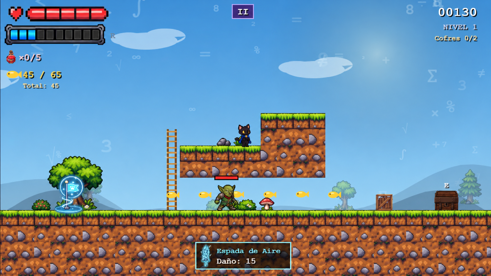
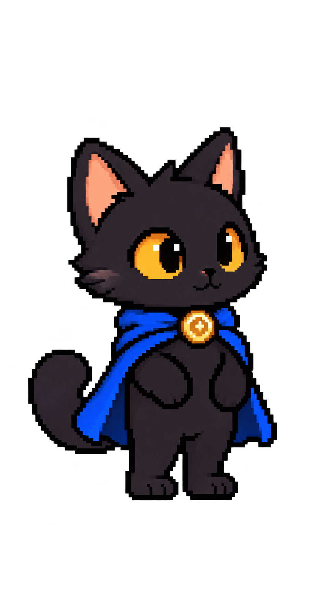
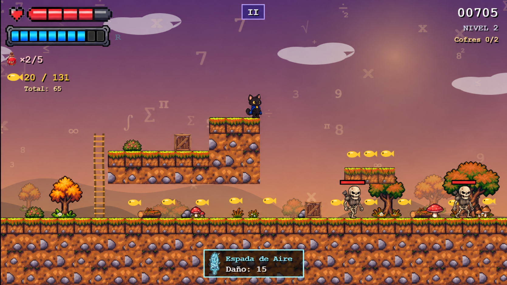
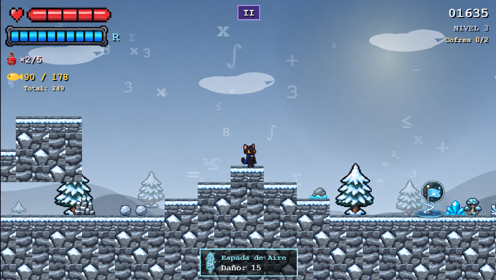

BIOMA 01 · NIVEL 1
Bosque luminoso
Cielo azul, árboles, hongos, terreno cubierto de hierba y enemigos tipo goblin.
UNA AVENTURA EDUCATIVA EN PIXEL ART
MISHIRO es un videojuego 2D de exploración y plataformas donde las matemáticas no detienen el viaje: ayudan a desbloquear nuevos poderes.

Mishiro es un gato aventurero que recorre diferentes biomas para recuperar peces dorados.
En el camino debe superar plataformas, evitar obstáculos, enfrentar enemigos y resolver desafíos matemáticos. Cada descubrimiento aporta experiencia y cada reto abre una oportunidad para obtener mejores habilidades.
Las capturas del prototipo muestran tres ambientes jugables con identidad propia: bosque luminoso, bosque otoñal y cordillera nevada.

Cielo azul, árboles, hongos, terreno cubierto de hierba y enemigos tipo goblin.

Vegetación otoñal, plataformas elevadas, escaleras y enemigos esqueleto.

Plataformas de roca y nieve, pinos, cristales azules y checkpoints luminosos.
Una aventura que premia la curiosidad, la práctica y el deseo de seguir avanzando.
Recorre escenarios, encuentra rutas y descubre objetos escondidos.
Enfrenta enemigos, obstáculos y desafíos de plataformas.
Completa tu experiencia y responde una pregunta matemática.
Obtén un poder y úsalo para continuar tu recorrido.
Cada nivel plantea una cantidad propia de peces. Reunirlos recompensa la exploración de cada bioma.
◆ POR DESCUBRIRPuntos seguros permiten retomar el camino después de un tropiezo.
El aprendizaje se transforma en habilidades útiles para la aventura.
Cuando la barra de experiencia se completa, aparece un reto matemático. Una respuesta correcta entrega un poder especial; una respuesta incorrecta concede un poder básico.
El jugador siempre puede continuar. El error se convierte en parte del aprendizaje, no en un castigo.
MISHIRO nace como un proyecto académico desarrollado por estudiantes de la Universidad Tecnológica del Oriente de Michoacán.
Equipo creador de MISHIRO
Equipo creador de MISHIRO
Equipo creador de MISHIRO
MISHIRO integra diseño de videojuegos, desarrollo de software e investigación académica. El prototipo visible reúne movimiento, combate, barras de vida y energía, peces coleccionables, cofres, enemigos, puntuación y checkpoints.
El concepto, las mecánicas, tres biomas y la identidad visual cuentan con evidencia observable. La integración y validación completa continúan en proceso.
Una encuesta exploratoria, realizada antes del cambio de nombre a MISHIRO, permitió conocer la aceptación inicial de la propuesta. Estos datos describen la muestra consultada; no representan todavía una validación comercial ni educativa definitiva.
Una aventura donde cada desafío puede convertirse en un nuevo poder.
Volver al inicio ↑